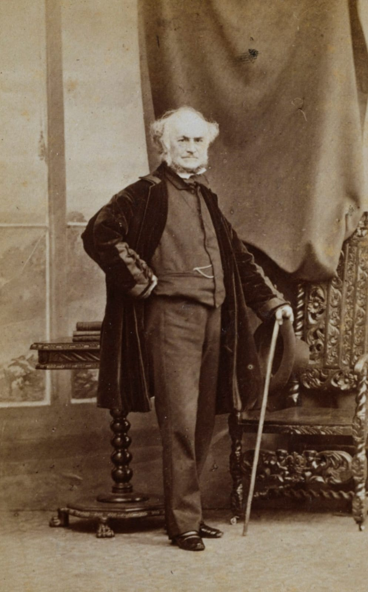
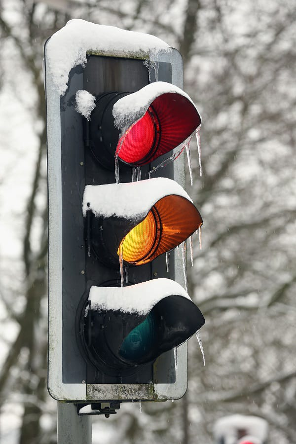

Colégio Estadual do Paraná - 2º K
Semáfaro
O semáforo é um dispositivo de sinalização que regula o tráfego de veículos e pedestres nas ruas e estradas.O semáforo é um dos elementos mais característicos das ruas de qualquer cidade do mundo e um dos sinais de trânsito mais importantes dos quais devemos prestar atenção, uma vez que sua função é regular o trânsito dos veículos e pedestres.
John Peake Knight
Quem inventou foi o inglês John Peake Knight, em 1868. Ele era um típico self-made man, criado na Inglaterra do século 19. Largou o colégio aos 12 anos para trabalhar na chapelaria de uma estação de trem. O primeiro semáforo foi colocado na praça em frente ao Parlamento britânico, onde fica o relógio Big Ben, com o objetivo de regular o tráfego de cavalos.
Características
O semafaro possue três luzes disponíveis, que se acendem de maneira alternada, permitem que tanto os automóveis como os pedestres saibam a hora de parar, que devem ficar alertas pelo pouco tempo que têm para transitar ou se estão livres para seguir adiante e circular pela via. A cor verde significa que o automóvel pode transitar pelas ruas dentro da velocidade e das condições permitidas pelas normas do trânsito em geral. Quando ocorre a mudança para a cor amarela indica que o motorista deve ter atenção e diminuir sua marcha porque logo chegará o sinal vermelho, este indica que o motorista deve parar seu veículo totalmente porque a próxima rua que cruza estará livre a partir desse momento, desta maneira, os pedestres terão a possibilidade de atravessar a rua pela correspondente faixa de pedestres.
Integrantes
Estou estudando no Colégio Estadual do Paraná.
Estou estudando no Colégio Estadual do Paraná.
 Rafael Nº40
Rafael Nº40
Estou estudando no Colégio Estadual do Paraná.
Estou estudando no Colégio Estadual do Paraná.
 Elyda Nº12
Elyda Nº12
Estou estudando no Colégio Estadual do Paraná.